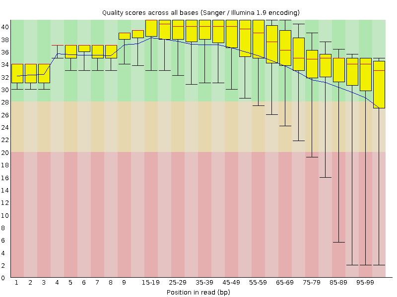
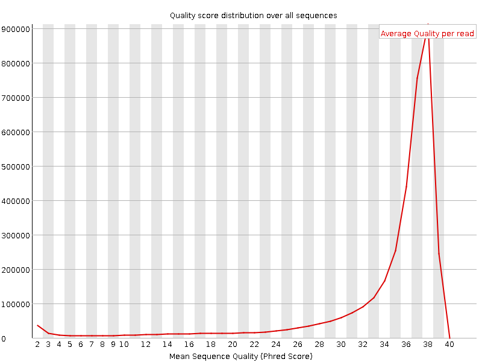
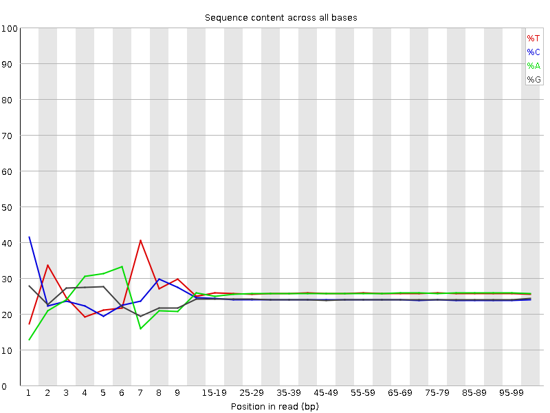
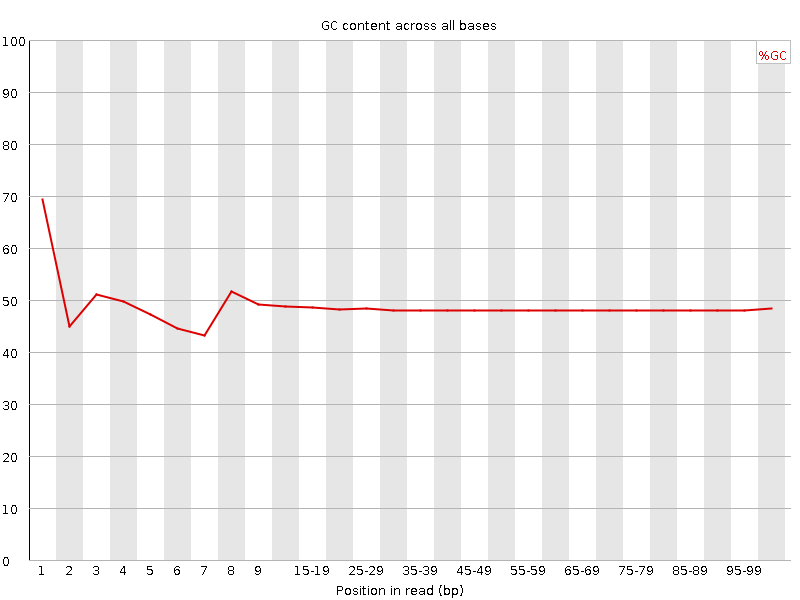
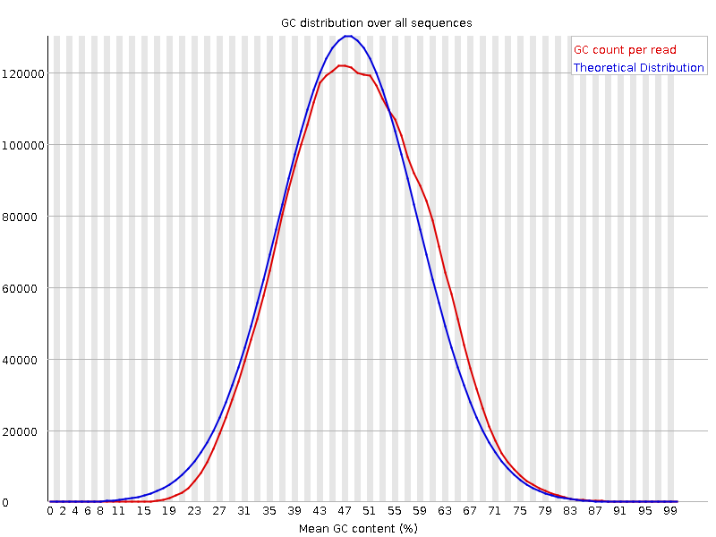
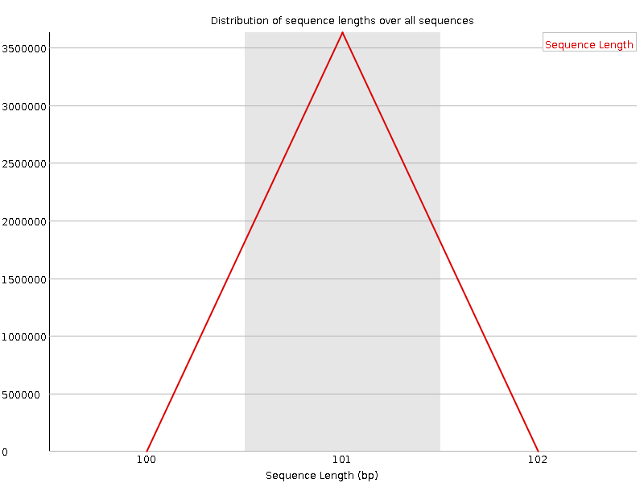
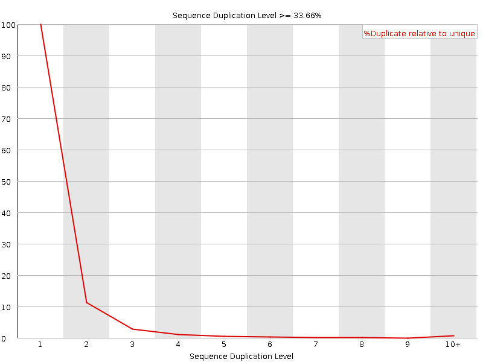
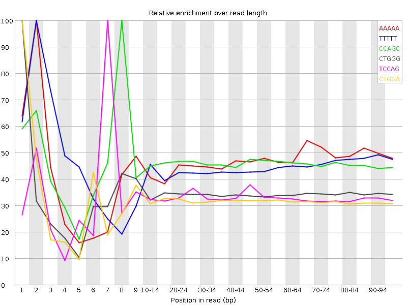

![[OK]](Icons/tick.png) Basic Statistics
Basic Statistics
| Measure | Value |
|---|---|
| Filename | C0VHUACXX120727.8.ATTGTCTG_1.fastq |
| File type | Conventional base calls |
| Encoding | Sanger / Illumina 1.9 |
| Total Sequences | 3628381 |
| Filtered Sequences | 0 |
| Sequence length | 101 |
| %GC | 48 |
Per base sequence quality

Per sequence quality scores

![[FAIL]](Icons/error.png) Per base sequence content
Per base sequence content

Per base GC content

Per sequence GC content

Per base N content

Sequence Length Distribution

![[WARN]](Icons/warning.png) Sequence Duplication Levels
Sequence Duplication Levels

Overrepresented sequences
No overrepresented sequences
Kmer Content

| Sequence | Count | Obs/Exp Overall | Obs/Exp Max | Max Obs/Exp Position |
|---|---|---|---|---|
| AAAAA | 1312290 | 3.3631427 | 7.2304816 | 2 |
| TTTTT | 1232675 | 3.022377 | 6.7295837 | 2 |
| CCAGC | 728025 | 2.326294 | 5.051458 | 8 |
| CTGGG | 714010 | 2.2858377 | 6.6619635 | 1 |
| TCCAG | 734345 | 2.2039812 | 6.6515036 | 7 |
| CTGGA | 723435 | 2.182932 | 6.8358793 | 1 |
| CTCCA | 711270 | 2.1232898 | 5.535158 | 6 |
| AAAAT | 774410 | 1.9671766 | 5.6090384 | 3 |
| GAAAA | 718245 | 1.9529383 | 5.016588 | 1 |
| CAGAA | 668075 | 1.9169402 | 5.1253333 | 1 |
| CTTTT | 678595 | 1.7714188 | 5.017704 | 1 |
| CTCAG | 570660 | 1.7127153 | 5.0302258 | 1 |
| CTTGG | 537540 | 1.6077125 | 5.0069566 | 1 |
| ATCCA | 436640 | 1.2351818 | 5.3466563 | 6 |